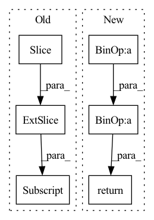

Pattern ID :1103
Before Change
idx_theta2 = torch.cat([idx_theta, idx_theta], dim=1)
// Calculate $[-x^{(\frac{d}{2} + 1)}, -x^{(\frac{d}{2} + 2)}, ..., -x^{(d)}, x^{(1)}, x^{(2)}, ..., -x^{(\frac{d}{2})}]$
neg_half_x = torch.cat([-x[:, :, :, d_2:] , x[:, :, :, :d_2]], dim=-1)
// Calculate
//After Change
// \end{align}
//
// for $i \in {1, 2, ..., \frac{d}{2}}$
x_rope = (x_rope * self.cos_cached[:x.shape[0]]) + (neg_half_x * self.sin_cached[:x.shape[0]])
//
return torch.cat((x_rope, x_pass), dim=-1)
class RotaryPEMultiHeadAttention(MultiHeadAttention):In pattern: SUPERPATTERN
Frequency: 3
Non-data size: 6
Instances Fragment ID: 4028031
Project Name: lab-ml/nn
Commit Name: 0ce65adf9e602321109528b05cf99fccb16cd2de
Time: 2022-06-03
Author: vpjayasiri@gmail.com
File Name: labml_nn/transformers/rope/__init__.py
M Class Name: RotaryPositionalEmbeddings
N Class Name: RotaryPositionalEmbeddings
M Method Name: forward(2)
N Method Name: forward(2)
M Parent Class: nn.Module
N Parent Class: nn.Module
M File Name: labml_nn/transformers/rope/__init__.py
N File Name: labml_nn/transformers/rope/__init__.py
M Start Line: 132
M End Line: 163
N Start Line: 171
N End Line: 193
Before Change
x = self.embedding(x) // (batch_size, target_seq_len, d_model)
x *= math.sqrt(self.d_model)
x += self.pos_encoding[:, :seq_len, :]
x = self.dropout(x)
// Batch first = True in decoder
for i in range(self.num_layers):After Change
self.attention[i](normed_output, normed_output, normed_output, target_mask)
)
normed_output = self.layer_norm(output)
output = output + self.dropout(
self.source_attention[i](normed_output, memory, memory, source_mask)
)
normed_output = self.layer_norm(output)
output = output + self.dropout(self.position_feed_forward[i](normed_output))
return self.layer_norm(output)
Fragment ID: 4028012
Project Name: mindee/doctr
Commit Name: fddceba7bee5098b4219b7ba6a0bdf4f4a98adfe
Time: 2022-06-09
Author: felixdittrich92@gmail.com
File Name: doctr/models/recognition/transformer/pytorch.py
M Class Name: Decoder
N Class Name: Decoder
M Method Name: forward(5)
N Method Name: forward(5)
M Parent Class: nn.Module
N Parent Class: nn.Module
M File Name: doctr/models/recognition/transformer/pytorch.py
N File Name: doctr/models/recognition/transformer/pytorch.py
M Start Line: 74
M End Line: 91
N Start Line: 147
N End Line: 167
Before Change
gate = self.norm(gate)
weight, bias = self.weight, self.bias
weight, bias = weight[:, :n, :n] , bias[:, :n]
mask = torch.ones(weight.shape[:2], device = device).triu_(1).bool()
weight = weight.masked_fill(mask[..., None], 0.)After Change
weight, bias = self.weight, self.bias
mask = torch.ones(weight.shape[-2:], device = device).triu_(1 + w).bool()
weight = weight.masked_fill(mask[None, ...], 0.)
gate = rearrange(gate, "b w n (h d) -> b w h n d", h = h)
gate = einsum("b w h n d, h m n -> b w h m d", gate, weight)
gate = gate + rearrange(bias, "h n -> () () h n ()")
gate = rearrange(gate, "b w h n d -> b w n (h d)")
out = gate * res
out = rearrange(out, "b w n d -> b (w n) d")
return out[:, :n]
def gMLPBlock(
*, Fragment ID: 4028020
Project Name: lucidrains/g-mlp-gpt
Commit Name: a2f065dfcf7be1d1e4b205ac1a55de4ad1b3327d
Time: 2021-05-20
Author: lucidrains@gmail.com
File Name: g_mlp_gpt/g_mlp_gpt.py
M Class Name: CausalSpatialGatingUnit
N Class Name: CausalLocalSGU
M Method Name: forward(2)
N Method Name: forward(2)
M Parent Class: nn.Module
N Parent Class: nn.Module
M File Name: g_mlp_gpt/g_mlp_gpt.py
N File Name: g_mlp_gpt/g_mlp_gpt.py
M Start Line: 90
M End Line: 100
N Start Line: 130
N End Line: 154